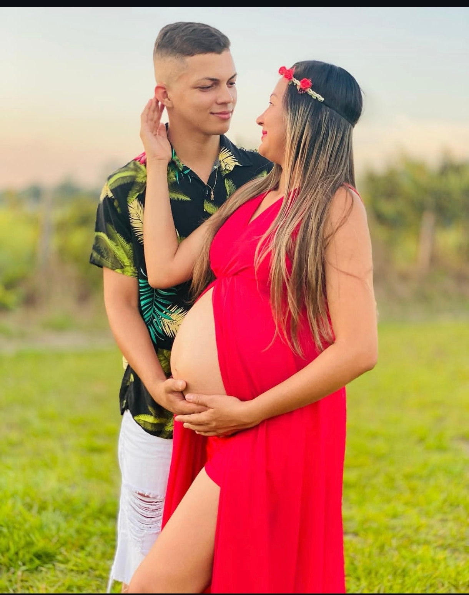
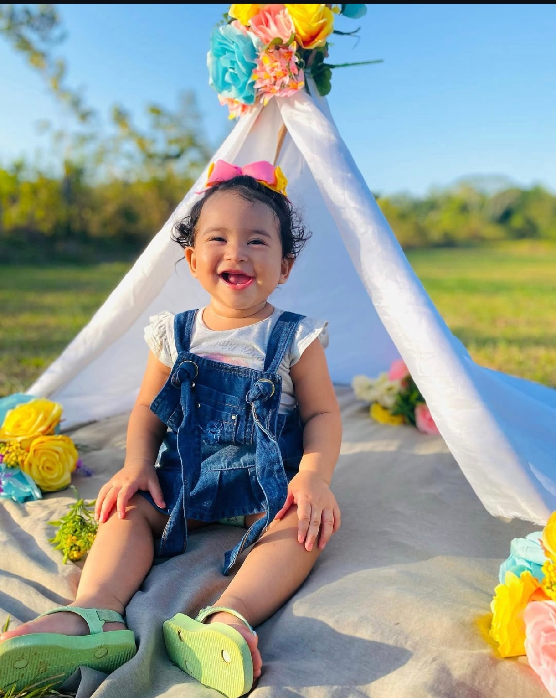
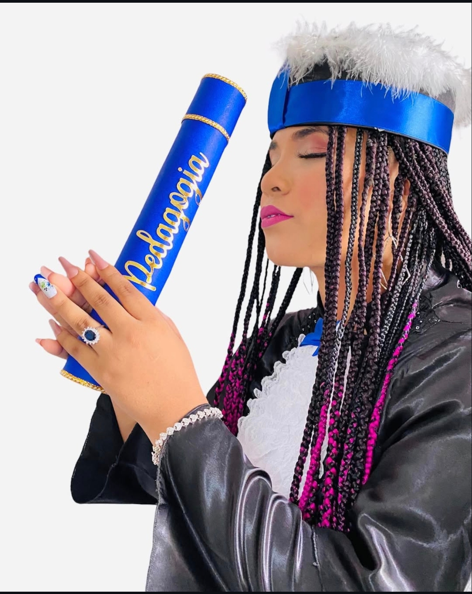

Gestão de Redes Sociais
Planejamento, calendário editorial, publicações e acompanhamento estratégico da sua presença digital.
Gestão profissional de redes sociais
Estratégia, conteúdo, cobertura de eventos e posicionamento para sua marca crescer nas redes sociais com mais clareza e autoridade.
Fale comigo no WhatsAppSobre mim
Acredito que cada marca, evento e pessoa tem uma essência única para mostrar. Meu trabalho é transformar momentos em conteúdo, presença em conexão e redes sociais em um espaço mais bonito, estratégico e verdadeiro.

Serviços
Planejamento, calendário editorial, publicações e acompanhamento estratégico da sua presença digital.
Posts, legendas e ideias criativas alinhadas ao posicionamento da sua marca.
Registro, bastidores, stories, reels e conteúdos para mostrar seu evento com presença e profissionalismo.
Portfólio

Direção visual e conteúdo para redes sociais.
Ver mais fotos
Comunicação leve, criativa e conectada ao público infantil.
Ver mais fotos
Registros, bastidores e peças visuais para redes sociais.
Ver mais fotosFeedbacks
“Minhas redes sociais ficaram muito mais profissionais. Agora consigo mostrar meu trabalho com mais clareza e recebo mais mensagens de clientes interessados.”
“A estratégia mudou a forma como eu via meu conteúdo. As postagens ficaram mais organizadas, bonitas e com uma comunicação que realmente combina com minha marca.”
“O atendimento foi cuidadoso do começo ao fim. Senti que cada detalhe foi pensado para deixar minha presença digital mais forte e profissional.”